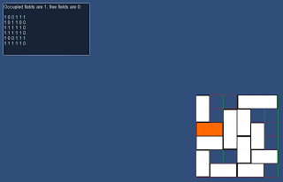

Grid Framework version 1.2.2 released
Category: release
Tags: old-blog
Update time. Let's go over what's new:
New example: sliding block puzzle

It might not look like much, but this is the most advanced example yet; it's similar to the movement with obstacles example where we use a matrix to store which tiles are allowed and which are forbidden. The tricky part is that now objects can span more than one tile and all of them have to be free. The solution is to break up the obstacle into one tile large parts, then check them all individually and finally assemble the answer from the individual answers.
The end result is that it feels like collision without actually using collision. Now, you might be wondering why not just use actual collision detection? For one, Unity's collision detection requires you to move objects through the physics engine instead of directly. This means instead of moving the block like you would in real life you need to use force, like dragging the block with a rubber band. This feels just wrong, especially on a touch device. If you move objects directly (i.e. using their Transform component) the physics engine is likely to miss intersections. The other reason is that Unity's collision detection just isn't made for packing objects together this tightly, sooner or later things will just randomly fly in all directions like the puzzle exploded or something.
Don't get me wrong, PhysiX was certainly developed by talented people who know more than I do, but it was written with 3D action games in mind and trying to get it to work in such a scenario is like trying to fit a square peg into a round hole; you might get it to kind of work well enough eventually, but in the time it took you you might as well have written your own solution which you have proper control over. Thanks to Grid Framework we can automate all the unit conversion between world space and grid coordinates.
Changes: I removed the minimumSpacing (rectangular grids) and minimumRadius (hex grids) variables because they were stupid. The reason why they existed in the first place was to prevent the user from setting too low or nonsensical values for spacing and radius. The proper way to do this would be to use accessors (also called properties), but Unity's editor scripting documentation is rather lacking, so I couldn't figure out how to make the values not reset all the time.
I finally found the solution (that's a topic for another time) and now I hardcoded a lower limit of 0.1 for both. I think that's a reasonable value, but if you need to go lower please let me know. The way it works now is that if you try to set the value to anything lower than 0.1 it will automatically default to 0.1. I was also able to get rid of other ugly parts inside the source code and clean things up thanks to accessors, but I don't think you will notice any difference
In terms of scripting this has no real consequences for you, just use spacing and radius like you did before.
Fixes: One major bug was a typo that could prevent the project from building. I also removed the redundant "Use Custom Rendering Range" flag from the inspector, now opening or closing the "Custom Rendering Range" foldout toggles the value (in terms of scripting the variable still exists, it's just the way you set it in the inspector). Speaking of inspector and foldout, previously the state of the "Draw & Render Settings" foldout reset each time you entered or exited play mode. Now the settings will stick and it will be individual for each grid type. There is also the obligatory under-the-hoods improvements, but there is nothing particular worth mentioning there.